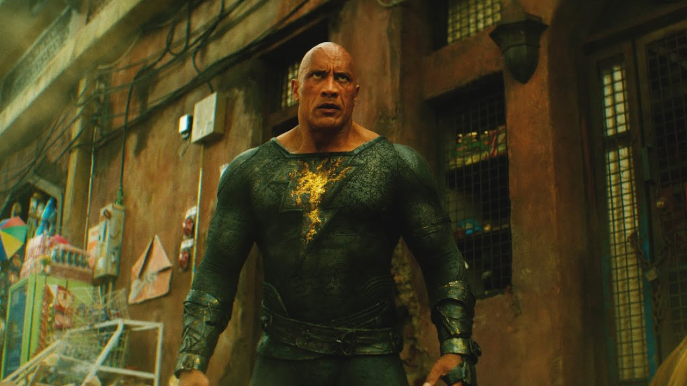

Adão Negro recebe primeiro trailer

Fonte da Imagem: WarnerBros
A Warner Bros, divulgou na última quarta-feira(08/06), o primeiro trailer do anti-herói da DC, Adão Negro, estrelado por Dwayne "The Rock" Johnson.
Fonte do vídeo: YouTube/Warner Bros. Pictures Brasil
O trailer mostra a reviravolta no protagonista, que antes um escravo, é concebido com poderes onipotentes dos antigos deuses.
Adão Negro é dirigido por Jaume Collet-Serra. Bill Parker e C.C. Beck. Adam Sztykiel, Rory Haines e Sohrab Noshirvani assinam o roteiro. O novo filme está previsto para ser lançando nas grandes telas em 20 de outubro de 2022.